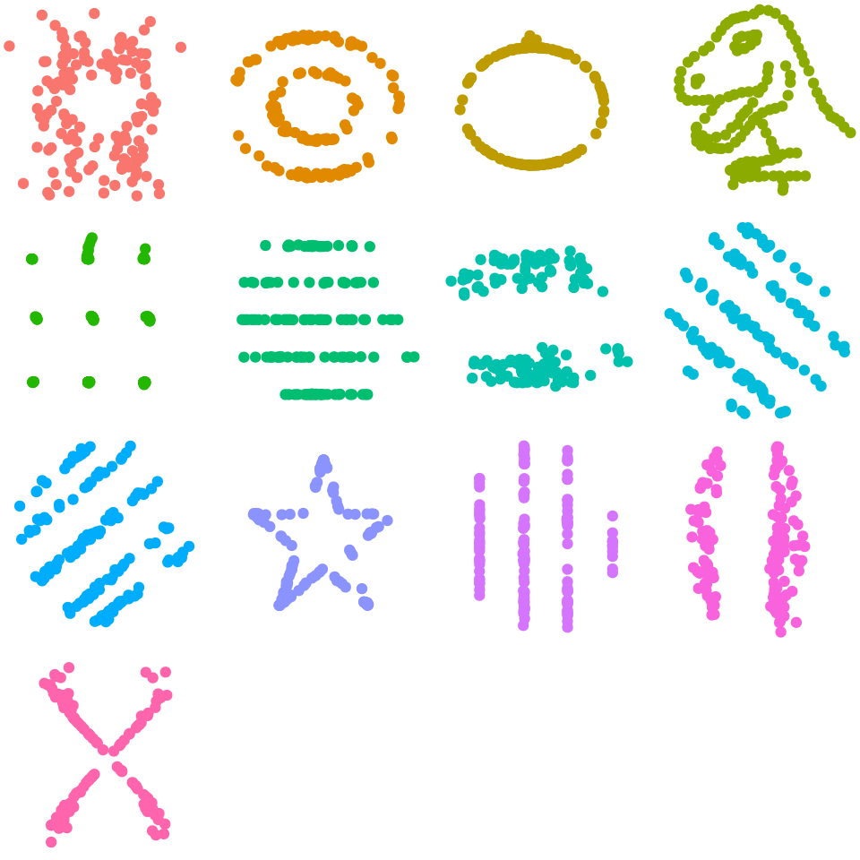
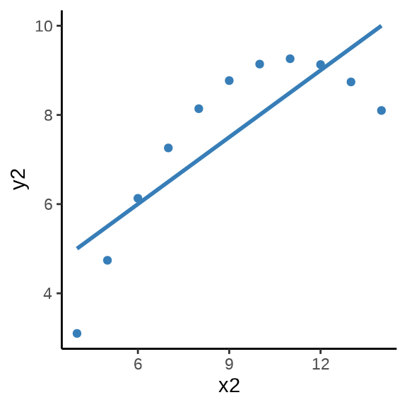
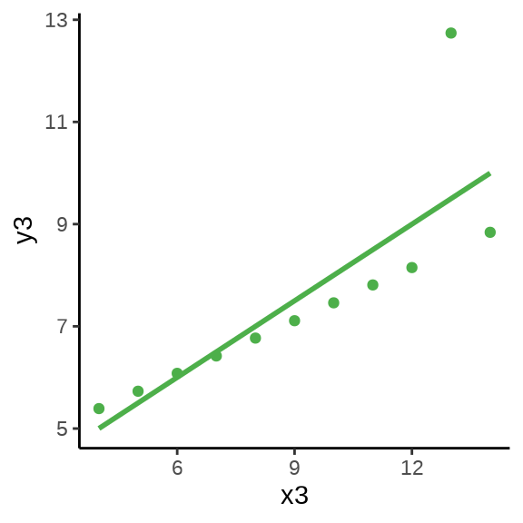

| 子数据集 | \(\bar{x}\) | \(\sigma_x\) | \(\bar{y}\) | \(\sigma_y\) | \(\beta_0\) | \(\beta_1\) | \(R^2\) |
|---|---|---|---|---|---|---|---|
| dino | 54.263 | 16.765 | 47.832 | 26.935 | 53.453 | -0.104 | 0.004 |
| away | 54.266 | 16.770 | 47.835 | 26.940 | 53.425 | -0.103 | 0.004 |
| h_lines | 54.261 | 16.766 | 47.830 | 26.940 | 53.211 | -0.099 | 0.004 |
| v_lines | 54.270 | 16.770 | 47.837 | 26.938 | 53.891 | -0.112 | 0.005 |
| x_shape | 54.260 | 16.770 | 47.840 | 26.930 | 53.554 | -0.105 | 0.004 |
| star | 54.267 | 16.769 | 47.840 | 26.930 | 53.327 | -0.101 | 0.004 |
| high_lines | 54.269 | 16.767 | 47.835 | 26.940 | 53.809 | -0.110 | 0.005 |
| dots | 54.260 | 16.768 | 47.840 | 26.930 | 53.098 | -0.097 | 0.004 |
| circle | 54.267 | 16.760 | 47.838 | 26.930 | 53.797 | -0.110 | 0.005 |
| bullseye | 54.269 | 16.769 | 47.831 | 26.936 | 53.809 | -0.110 | 0.005 |
| slant_up | 54.266 | 16.769 | 47.831 | 26.939 | 53.813 | -0.110 | 0.005 |
| slant_down | 54.268 | 16.767 | 47.836 | 26.936 | 53.850 | -0.111 | 0.005 |
| wide_lines | 54.267 | 16.770 | 47.832 | 26.938 | 53.635 | -0.107 | 0.004 |
介绍
提示
其它小节完成后再写本节。
本书围绕数据分析实战工作流分四大部分：
- 数据收集和整理。
- 数据探索和分析。
- 数据建模和解释。
- 数据交流和应用。
对分析师来说，相比于整理、探索、建模和交流，收集、分析、解释和应用是更难的事。始终围绕 R 语言、数据分析、实战来介绍每一部分、每一章的内容，让每一部分、每一章的内容都在丰富和解释 R 语言、数据分析、实战主题。
《Design Principles for Data Analysis》在数据分析的实践中，提炼出设计思维，在解决问题的过程中，理解解决方案为谁而设计。不同的数据分析师（数据分析的生产者）在分析方法、工具和工作流等方面的选择，不仅影响数据分析产品本身，而且影响数据分析的消费者的体验。生产者的角色可以看作围绕一套设计原则设计数据分析，基于这套原则去量化。
2015 年《科学》杂志发表重量级文章《Estimating the reproducibility of psychological science》，讨论了目前心理学的可重复性问题。可重复性受到越来越多的关注，数据分析是科学研究中非常重要的一环，可重复性数据分析的需求越来越大，在真实数据的基础上，本书试图通过 R 语言展现数据分析的技术栈，包括数据获取、数据清洗、数据整理和数据操作，数据探索和分析，数据建模和结果解释，以及数据展示和交流。
近年来，R 语言社区在数据分析领域频频发力，特别是 RStudio 公司及其打造的产品矩阵。数据获取、探索和分析方面，有 ggplot2、dplyr、tidyr、purrr 及整个 tidyverse 家族。数据交流和应用方面，有 Shiny、 Quarto、flexdashboard、R Markdown。数据建模和解释方面，有 tensorflow、keras、vetiver、plumber 及整个 tidymodels 家族。数据工作流集成方面，提供许多接口 R 包，支持大量数据库的连接驱动，sparklyr 与 Apache Spark 连接实现大规模数据处理，renv 实现系统软件依赖和 R 包版本管理，reticulate 包实现与 Python 连接，支持导入许多 Python 社区的模块。还有一系列遵循 tidyverse 设计原则的数据分析框架，比如 DrWhy、mlr3verse、easystats、tidymodels、fastverse、healthyverse、fable 等。
RStudio 公司在解决数据分析技术栈，提供通用解决方案，而在特定领域内，也逐渐走向整合，形成生态。2005 年 Rigby R. A. 和 Stasinopoulos D. M. gamlss 包 https://www.gamlss.com/ 试图将一系列统计模型，如线性模型 LM、广义线性模型 GLM、广义可加模型 GAM、线性混合效应模型LMM、广义线性混合效应模型 GLMM、广义可加混合效应模型 GAMM 纳入统一的广义可加模型框架下(Rigby 和 Stasinopoulos 2005)。2009 年 Håvard Rue 开发INLA 包，类似 gamlss 包，同样是整合一系列统计模型，纳入一个新的基于贝叶斯视角的集成嵌套拉普拉斯框架下，主要应用于空间统计领域，更多详见 https://www.r-inla.org/。
数据探索和分析
数据可视化是数据探索和分析的一个手段，数据可视化的主要目的有两个：其一是探索 Explore，其二是解释 Explain。
探索是面向数据分析师自己，而展示是面向数据分析的消费者。面对不同的角色，可视化的目的是不一样的，探索是了解数据，展示是传递信息。了解数据的分布、隐藏的模式、缺失情况、异常情况，步步深入地挖掘数据的潜在规律。展示是传递数据分析的结论和洞见，强调美观、效率、效果，除了数据分析师本人几乎没人想看探索数据过程中产生的数以十计的中间图形。
数据可视化是通过计算机程序绘制图形来展示数据，有时是在图上展示原始数据，比如散点图，有时展示汇总数据，比如直方图，有时借助一些数据变换，比如对数变换，甚至更为复杂的统计变换。数据可视化主要是描述、提炼和汇总原始数据，从数据中获取信息。
除了选择合适的工具（Base R / grid / lattice / ggplot2）绘制图形（提供 R 代码实现），选择图形（30+多种常见图形）和解释图形（真实数据背景）往往比想的更加困难，本书试图去回答这些问题。
大多教科书侧重理论和方法，计算机强调编程，数值计算是精确的，图形是粗燥的。然而，只有模型和方法，缺乏数据探索的分析和建模，计算的结果和分析的结论可能是不正确的，数据可能在欺骗你(Anscombe 1973)。
datasauRus 包 (Davies, Locke, 和 D’Agostino McGowan 2022) 内置了一个数据集 datasaurus_dozen，它整合了 13 个子数据集，它们在均值、标准差等描述性统计量方面十分接近，见下 表格 1 。其中 \(\bar{x},\sigma_x\) 分别代表预测变量 \(X\) 的均值和标准差，\(\bar{y},\sigma_y\) 代表响应变量 \(Y\) 的均值和标准差，\(\beta_0,\beta_1\) 代表回归方程 方程式 1 的截距和斜率，\(R^2\) 代表模型拟合数据的程度。
\[ y = \beta_0 + \beta_1 x + \epsilon \tag{1}\]
诸多统计量都难以发现它们的差异，透过数据可视化这面照妖镜，却可以使数据的本来面目无所遁形，如 图 1 所示。可见，单个统计量就好比管窥蠡测，稍有不慎，我们就成了盲人摸象。

数据可视化的重要性在于探索数据的真实分布，为数据建模提供假设和依据，也为验证、评估模型的效果。结合 图 1 也解释了为什么线性回归模型在解释数据方面的无能为力，即 \(R^2\) 介于 0.004 至 0.005 之间，数据根本不符合线性模型的条件。
有时候是有的数据符合模型假设，而有的不符合，我们没有上帝之眼，看不到哪些符合哪些不符合。在数据集不多的情况下，可以全部展示出来，数据集很多的时候，可以抽样一部分，再展示。下面再举一个例子，anscombe 数据集来自 R 软件内置的 R 包 datasets，它包含四组数据 \((x_i, y_i), i =1,2,3,4\)，如 表格 2 所示。
| 第1组 | 第2组 | 第3组 | 第4组 | ||||
|---|---|---|---|---|---|---|---|
| x1 | y1 | x2 | y2 | x3 | y3 | x4 | y4 |
| 10 | 8.04 | 10 | 9.14 | 10 | 7.46 | 8 | 6.58 |
| 8 | 6.95 | 8 | 8.14 | 8 | 6.77 | 8 | 5.76 |
| 13 | 7.58 | 13 | 8.74 | 13 | 12.74 | 8 | 7.71 |
| 9 | 8.81 | 9 | 8.77 | 9 | 7.11 | 8 | 8.84 |
| 11 | 8.33 | 11 | 9.26 | 11 | 7.81 | 8 | 8.47 |
| 14 | 9.96 | 14 | 8.10 | 14 | 8.84 | 8 | 7.04 |
| 6 | 7.24 | 6 | 6.13 | 6 | 6.08 | 8 | 5.25 |
| 4 | 4.26 | 4 | 3.10 | 4 | 5.39 | 19 | 12.50 |
| 12 | 10.84 | 12 | 9.13 | 12 | 8.15 | 8 | 5.56 |
| 7 | 4.82 | 7 | 7.26 | 7 | 6.42 | 8 | 7.91 |
| 5 | 5.68 | 5 | 4.74 | 5 | 5.73 | 8 | 6.89 |
用统计的方法发现四组数据的样本均值、方差、相关系数和回归系数几乎是相同的，实际上，借助散点 图 10.15 分别描述各组数据的关系时，却发现四组数据之间有极大的差异，且只有第一组数据看起来符合线性模型的条件 (Anscombe 1973)。


图形还告诉我们第二组数据的更适合二次非线性回归，第三组数据受到离群点的重大影响，第四组数据自变量只有两个取值，像是两个分布按不同比例混合的结果。
数据展示和交流
无论是数据表格还是交互图形，首先都承担着数据展示的基础作用，通过趋势、对比继而传递更加明确的信息和洞见，采用合适的表达方式可以高效准确地传递信息，促进交流，获取反馈，从而改善已有的分析方法和结论。
数据展示和交流主要分两大部分：其一是用户可与之交互的图形、表格和应用，其二是文档内容可重复的 HTML 动态网页文档、PDF 便携式文档、 Office 办公文档。涵盖完整数据分析过程的网页文档， 用于毕业的学位论文、投稿的期刊论文、出版的书籍初稿、交流的演示文稿，无论是 LaTeX 编译的 PDF 格式文档还是 DOCX 文档，R 语言社区都有非常先进的工具满足需求。
章节 13 首先介绍 plotly 包绘图的基础语法以及与 ggplot2 包绘图 的关系，其次介绍制作常用的交互图形，如条形图、直方图、箱线图、曲线图等，最后介绍一些常用的技巧，如导出静态图片、添加水印徽标等。
章节 14 首先介绍 DT 包制作交互表格的基础语法，其次介绍常用的功能，如列分层分组、按列配色、列格式化、搜索排序、数据导出等，最后介绍一些基础的 CSS 和 JavaScript 知识，支持一些中高级的表格定制功能。
章节 15 首先介绍 shiny 包制作交互应用的整体概览，如前端布局、后端计算、筛选器、模块交互等，其次从易到难介绍一个完整的数据应用，最后介绍生产级的 Shiny 应用开发的技术栈。
章节 16 首先回顾 R 语言社区陆续出现的 R Sweave、R Markdown 和 Quarto 三套创作工具，其次介绍 Quarto 的基础用法，如 Markdown 基础和 Pandoc 的基础，接着根据使用场景分别介绍 HTML、PDF 和 Office 文档的特性。